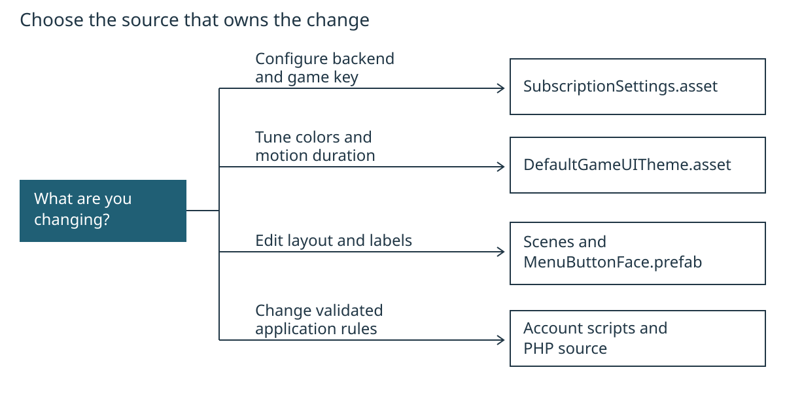

Customize the account flow
Keep configuration in assets, state changes in PlayerManager, requests in Player, and display work in the existing controllers/loaders. Start with setup if the template is not configured. These examples assume Unity 2022.3.62f3 and the included PHP backend.
Contents
- Trace a request before editing it
- Find the owner of a change
- Add a display-only account row
- Adapt the phone policy on both sides
- Preserve the integration boundaries
- Verify and export
Trace a request before editing it
LoginController.LogMasuk() validates input and starts its login coroutine. The controller constructs the original form fields, then calls manager.Requests.Post. In normal play this is the Player component, which joins the configured endpoint, sends the request and returns a Player.Result.
The controller checks the captured session generation before accepting a response. PlayerManager.AcceptLogin owns session credentials and account caches. RefreshNow fetches the current profile and subscription, then raises StateChanged. loadDetails, loadSubscriptionDetails, loadNama and GameUIAccessSummary subscribe while enabled and render that state. They do not independently grant access.
For billing, LoadPaymentSite asks createBillingLink.php for an authenticated ticket. The returned URL must match the configured HTTPS host and allowed page and must not be expired. Opening the browser sets up a refresh on return; it does not set premium status. See the backend contract for the wire rules.
The editing map routes common changes to their existing sources. It describes where to edit, not runtime dependencies. The editable SVG preserves the four destinations in the original Mermaid source and arranges them vertically for readable print labels.


Find the owner of a change
| Existing file | Responsibility and safe editing point |
|---|---|
Assets/SubscriptionSettings.cs and Assets/Settings/SubscriptionSettings.asset | URL, game key, endpoints, timing and configuration validation. Use the Inspector for installation values. |
Assets/Player.cs | HTTP, credential attachment, response parsing and callback delivery. IPlayerRequests is the existing offline test seam. |
Assets/PlayerManager.cs | Session generation, refresh state, explicit cache mappings, access decision and logout. |
Assets/LoginController.cs, Assets/RegisterUserController.cs | Form validity, one submission at a time, response messages and retry. |
Assets/loadDetails.cs | Profile rows and verification request ownership; VerificationCooldownSeconds controls the client resend delay. |
Assets/CheckEmailVerify.cs, Assets/checkEmailValidation.cs | Whether verification or billing controls are currently usable. These are presentation guards; server authorization remains required. |
Assets/loadSubscriptionDetails.cs | Plan/date/status rows; StatusMessage prioritizes failures over stale display state. |
Backend/SubscriptionServer/src/Accounts.php | Registration policy, login, session conflict handling and verification/mail operations. |
Backend/SubscriptionServer/src/Core.php, Billing.php | Server authentication/database boundaries and provider synchronization/checkout. |
The existing lower-case component names are retained because scenes and external code may reference them. Improve a local/private name when useful; do not rename public actions or serialized fields without a compatibility migration.
Add a display-only account row
This example displays the current account ID; it adds no API field and does not make the profile editable. Work in a copy or branch, with Play mode stopped and scene edits saved.
- Open
Assets/Scenes/LamanUtama.unity. Find the profile panel'sloadDetailscomponent. Duplicate an existing read-only detail row in that panel and adjust its RectTransform to avoid overlap. Change its visible caption toID akaun. - In
Assets/loadDetails.cs, beside the other serialized input fields, add:
[SerializeField]
TMP_InputField accountIdField;- In
LoadDetailsUser(), immediately after the existing name/email/phoneSetcalls, add:
Set(accountIdField, manager != null && manager.IsLoggedIn
? manager.id_user.ToString()
: "");- Wait for compilation, then assign the duplicated row's TMP_InputField to Account Id Field on
loadDetails. Keep it read-only; the existingSethelper also applies that property. Save the scene and run scene validation. - Use an authorized development account to inspect the row. Trigger refresh, close/reopen the profile, log out and sign in as another account. The row should show only the current signed-in account ID and clear when there is no session.
Do not use this ID to authenticate a request. The server validates the bearer session and rejects mismatched identity fields. A modified client can change its own UI. If you later display a new server property, update the wire contract, parsing, state mapping and tests together.
Adapt the phone policy on both sides
The shipped policy accepts Malaysian mobile numbers through RegisterUserController.MatchPhoneNumberPattern and registerAccount() in server src/Accounts.php. Changing only Unity causes valid-looking forms to fail on the server.
For a concrete alternative, require a plus sign, a nonzero first digit and 7–15 digits total. This is a simple international-format policy, not a country-specific phone-number verifier. It requires no new package.
In Assets/RegisterUserController.cs, change the pattern to:
public const string MatchPhoneNumberPattern = @"^\+[1-9][0-9]{6,14}$";In Backend/SubscriptionServer/src/Accounts.php, change the $validPhone expression inside registerAccount() to:
$validPhone = preg_match('/^\+[1-9][0-9]{6,14}$/', $phone);Update the server's registration error text, SignUp's phone label/placeholder, and any tooltip to describe the same format. Keep the existing 30-byte server input cap. Before adopting this in an existing deployment, decide how to normalize stored phone numbers and retain uniqueness; this example does not migrate existing accounts.
| Input | Proposed rule |
|---|---|
+60123456789 | Accept |
+1234567 | Accept |
0123456789 | Reject: plus sign missing |
+01234567 | Reject: first digit is zero |
+123456 | Reject: fewer than seven digits |
+1234567890123456 | Reject: more than fifteen digits |
Update existing offline fixtures that use Malaysian numbers intentionally, then test accepted input, rejected input and duplicate phone registration against the same revised policy. The repository retains its Malaysian policy; this example is a customization recipe, not a shipped policy change.
Preserve the integration boundaries
Keep session generation checks after asynchronous replies. SessionVersion changes when the account is cleared or its pending refresh is canceled. A late response or protected 401 from an old account must not affect the next account.
Keep try/finally cleanup around pending requests and release only the verification owner captured by that request. A closed panel must not leave a submit button locked or clear a newer request's state. Pair StateChanged subscriptions with unsubscriptions.
For PHP changes, preserve prepared SQL parameters, transaction scope, account lock order, single-use tokens and durable checkout idempotency. The account lock in synchronize() spans retrieval and application of provider state so a stale concurrent response cannot win. The checkout intent commits before a provider side effect so an interrupted call can reuse its key.
PlayerPrefs keeps legacy display keys. ApplySubscription now names each wire-field/cache-key mapping explicitly. Add a cache field only when needed, with its cleanup path and round-trip regression check. Do not persist bearer tokens or treat local caches as proof of payment.
Verify and export
Run the scene validators and both offline suites using setup's offline steps. The data suite includes cache identifier mapping, display-field mapping and null-value replacement. Use the server test procedure after PHP policy or transaction changes. It requires a disposable localhost database and sends no live payment requests.
Validation evidence for this refactor is recorded in VERIFICATION.md. Scripted customization checks and manual Editor steps are identified separately there. Hosted email, Stripe transactions, physical-device input and the complete human walkthrough remain owner checks.
Regenerate both screen HTML companions from the root:
python Docs/tutorial/export_game_ui_tutorial.pyThe screen exporter uses Python's standard library. To rebuild both PDFs and static print HTML, run:
python Docs/tutorial/export_tutorial_pdfs.pyPDF export requires Python Playwright and installed Edge/Chrome. See the menu tutorial's export steps for prerequisites and the editable print styles. Edit Markdown for content; HTML and PDF are generated outputs. Check code blocks, links, tables and page breaks after a change. The exporters reject unsupported Markdown or page overflow rather than silently dropping content.